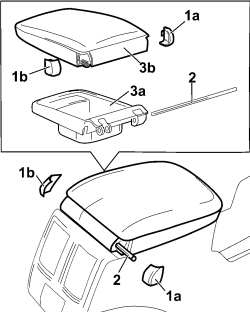

7040L71 BOX ON TUNNEL REAR COATING - R R
- Path
- Procedures > 70 FITTINGS > 7040 BODY INTERIOR FITTINGS AND TRIM > 7040L CABIN FLOOR COVERING > 7040L71 BOX ON TUNNEL REAR COATING - R R
- Kind
- repair procedure (removal / refitting; the operation number is the code)
- Applies to
- all engines; all production periods
- Interactive page
- https://sloeber94.github.io/elrnDB-fCrm/en/#/194001082
Applies to: all engines; all production periods
 Removing
Removing
 Refitting
RefittingLet the left and right seats slide back into the end of travel position.
1. Release the covers (1a) and (1b).
2. Release the pin.
3. Remove the oddments pocket (3a) complete with armrest flap (3b).

Applies to: all engines; all production periods
Refitting
Removing- Check that the armrest oddments pocket is not damaged.
- Place the oddments pocket in position.
- Insert the pin and fit the covers.
- Placethe left and right seats back in position.